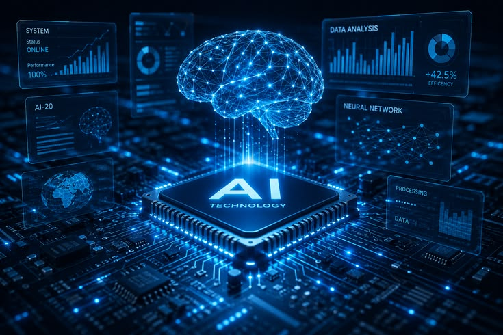

Pilar Machine Learning: Dari Fondasi Data Menuju Otomasi Industri

Machine Learning (ML) telah berevolusi dari sekadar cabang kecerdasan buatan teoretis menjadi tulang punggung revolusi industri modern. Inti dari kemampuan ML terletak pada kapasitas algoritmanya untuk mengidentifikasi pola tersembunyi di balik tumpukan *big data* dan melakukan prediksi akurat tanpa harus diprogram secara eksplisit untuk setiap tugas.
Mulai dari model *supervised learning* untuk klasifikasi citra medis, *unsupervised learning* untuk pengelompokan preferensi konsumen, hingga *reinforcement learning* pada sistem robotika otonom, adopsi teknologi ini kini mendorong efisiensi rantai pasok global dan personalisasi layanan digital secara masif.
Tiga Komponen Krusial Ekosistem ML
- Data Berkualitas Tinggi: Fondasi pelatihan model agar bebas dari bias dan memiliki akurasi tinggi.
- Infrastruktur Komputasi: Pemanfaatan akselerator perangkat keras seperti GPU dan TPU modern.
- Evaluasi & Validasi: Memastikan algoritma mampu melakukan generalisasi terhadap data dunia nyata.